print(salaries.isna().sum())Limpieza e imputación de datos
Explorar y analizar datos a menudo significa tratar con valores perdidos, tipos de datos incorrectos y valores atípicos. En este capítulo, aprenderás técnicas para gestionar estos problemas y agilizar tus procesos en EDA.
Tratar los datos que faltan
Por qué un dato faltante es un problema?
- Afectan las distribuciones
- Los datos de la población son menos repreesntativos
- Puede resultar en conclusiones incorrectas
Ejemplo datos de profesionales de datos
| Column | Description | Data type |
|---|---|---|
Working_Year |
Year the data was obtained | Float |
Designation |
Job title | String |
Experience |
Experience level e.g., "Mid", "Senior" |
String |
Employment_Satus |
Type of employment contract e.g., "FT", "PT" |
String |
Employee_Location |
Country of employment | String |
Company_Size |
Labels for company size e.g., "S", "M", "L" |
String |
Remote_Working_Ratio |
Porcentage of time working remotely | Integer |
Salary_USD |
Salary in US dollars | Float |
- Revisando los datos faltantes

Estrategias para el manejo de datos faltantes
Eliminar los datos faltantes
- 5 % o menos del total de valores
Imputar la media, mediana o la moda
- Depende de la distribución y contexto
Imputar por sub-grupos
- Diferentes niveles de experiencia tienen diferente mediana en el salario
Eliminando valores faltantes
threshold = len(salaries) * 0.05
print(threhold)cols_to_drop = salaries.columns[salaries.isna().sum() <= threshold]
print(cols_to_drop)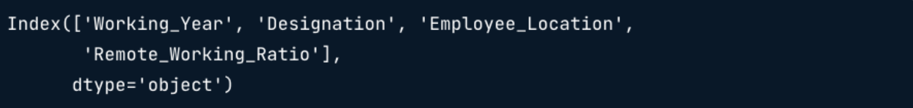
salaries.dropna(subset=cols_to_drop, inplace=True) # Para actualizar el DataFrame- Imputando una estadística de resumen
cols_with_missing_values = salaries.columns[salaries.isna().sum() > 0]
print(cols_with_missing_values)
for col in cols_with_missing_values[:-1]:
salaries[col].fillna(salaries[col].mode()[0])- Revisando los valores faltantes que faltan
print(salaries.isna().sum())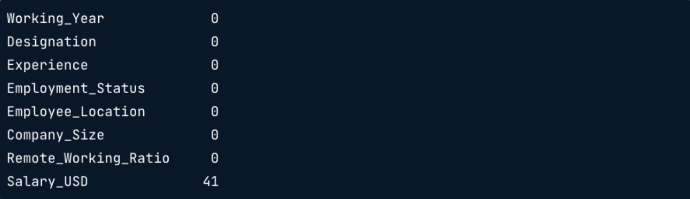
- Imputando por subgrupo
salaries_dict = salaries.groupby('Experience')['Salary_USD'].median().to_dict()
print(salaries_dict)
salaries['Salary_USD'] = salaries['Salary_USD'].fillna(salaries['Experience'].map(salaries_dict))
Tratar los datos que faltan
Es importante tratar los datos que faltan antes de empezar el análisis.
Un enfoque consiste en descartar los valores que faltan si representan una pequeña proporción, normalmente el 5 %, de los datos.
Trabajando con un conjunto de datos sobre precios de tiquetes de avión, almacenado como un DataFrame de pandas llamado planes, tendrás que contar el número de valores perdidos en todas las columnas, calcular el cinco porciento de todos los valores, utilizar este umbral para eliminar observaciones y comprobar cuántos valores perdidos quedan en el conjunto de datos.
import pandas as pd
ruta = './data/planes.csv'
planes = pd.read_csv(ruta)
print(planes.head)<bound method NDFrame.head of Airline Date_of_Journey Source Destination \
0 Jet Airways 9/06/2019 Delhi Cochin
1 IndiGo 12/05/2019 Kolkata Banglore
2 IndiGo 01/03/2019 Banglore New Delhi
3 SpiceJet 24/06/2019 Kolkata Banglore
4 Jet Airways 12/03/2019 Banglore New Delhi
... ... ... ... ...
10655 Air Asia 9/04/2019 Kolkata Banglore
10656 Air India 27/04/2019 Kolkata Banglore
10657 Jet Airways 27/04/2019 Banglore Delhi
10658 Vistara 01/03/2019 Banglore New Delhi
10659 Air India 9/05/2019 Delhi Cochin
Route Dep_Time Arrival_Time Duration Total_Stops \
0 DEL → LKO → BOM → COK 09:25 04:25 10 Jun 19h 2 stops
1 CCU → NAG → BLR 18:05 23:30 5h 25m 1 stop
2 BLR → NAG → DEL 16:50 21:35 4h 45m 1 stop
3 CCU → BLR 09:00 11:25 2h 25m non-stop
4 BLR → BOM → DEL 18:55 10:25 13 Mar 15h 30m 1 stop
... ... ... ... ... ...
10655 CCU → BLR 19:55 22:25 2h 30m non-stop
10656 CCU → BLR 20:45 23:20 2h 35m non-stop
10657 BLR → DEL NaN 11:20 3h non-stop
10658 BLR → DEL 11:30 14:10 2h 40m non-stop
10659 DEL → GOI → BOM → COK 10:55 19:15 8h 20m 2 stops
Additional_Info Price
0 No info 13882.0
1 No info 6218.0
2 No info 13302.0
3 No info 3873.0
4 In-flight meal not included 11087.0
... ... ...
10655 No info 4107.0
10656 No info 4145.0
10657 NaN 7229.0
10658 No info 12648.0
10659 No info 11753.0
[10660 rows x 11 columns]>Instrucciones
- Imprime el número de valores perdidos en cada columna del DataFrame
# Count the number of missing values in each column
print(planes.isna().sum())Airline 427
Date_of_Journey 322
Source 187
Destination 347
Route 256
Dep_Time 260
Arrival_Time 194
Duration 214
Total_Stops 212
Additional_Info 589
Price 616
dtype: int64- Calcula a cuántas observaciones equivale el cinco porciento del DataFrame
planes
# Find the five percent threshold
threshold = len(planes) * 0.05
print(threshold)533.0Crea
cols_to_dropaplicando una indexación booleana a las columnas del DataFrame con valores perdidos menores o iguales que el umbral.Utiliza este filtro para eliminar los valores que faltan y guardar el DataFrame actualizado.
# Create a filter
cols_to_drop = planes.columns[planes.isna().sum() <= threshold]
print(cols_to_drop)
# Drop missing values for columns below the threshold
planes.dropna(subset=cols_to_drop, inplace=True)
print(planes.isna().sum())Index(['Airline', 'Date_of_Journey', 'Source', 'Destination', 'Route',
'Dep_Time', 'Arrival_Time', 'Duration', 'Total_Stops'],
dtype='object')
Airline 0
Date_of_Journey 0
Source 0
Destination 0
Route 0
Dep_Time 0
Arrival_Time 0
Duration 0
Total_Stops 0
Additional_Info 300
Price 368
dtype: int64Al crear un umbral de valores faltantes y usarlo para filtrar columnas, haz logrado eliminar los valores faltantes de todas las columnas excepto "Additinal_Info" y "Price".
Estrategias para datos que faltan
La regla del cinco porciento ha funcionado muy bien en tu conjunto de dato planes, ¡eliminando los valores perdidos de nueve de las 11 columnas!
Ahora tienes que decidir qué hacer con las columnas "Additional_Info" y "Price", a las que les faltan los valores 300 y 368 respectivamente.
Primero echarás un vistazo a lo que contiene "Additional_Info", y después visualizarás el precio de los billetes de avión de distintas compañías aéreas.
import matplotlib.pyplot as plt
import seaborn as snsInstrucciones
- Imprime los valores y frecuencias de
"Additional_Info".
# Check the values of the Additional_Info column
print(planes['Additional_Info'].value_counts())Additional_Info
No info 6399
In-flight meal not included 1525
No check-in baggage included 258
1 Long layover 14
Change airports 7
No Info 2
Business class 1
Red-eye flight 1
2 Long layover 1
Name: count, dtype: int64- Crea un boxplot de
"Price"frente a"Airline"
# Create a box plot of Price by Airline
sns.boxplot(data=planes, x='Airline', y='Price',
hue='Airline', legend=False)
plt.show()
- Pregunta
- ¿Cómo debes tratar los valores que faltan en
"Additional_Info"y"Price".?
Respuestas Posibles
No necesitamos la columna "Additional_Info", y deberías imputar la mediana de "Price" por "Airline" para representar los datos con precisión.
Imputar los precios de los aviones que faltan
!Ahora solo queda una columna con valores perdidos!
Has eliminado la columna "Additional_Info" de planes, el último paso es imputar los datos que faltan en la columna "Price" del conjunto de datos.
Como recordatorio, tú generaste este diagrama de caja, que sugería que imputar el precio medio basándose en el "Airline" ¡es un enfoque sólido!
# Eliminamos la columna Additional_Info
planes = planes.drop('Additional_Info', axis=1)
planes.columnsIndex(['Airline', 'Date_of_Journey', 'Source', 'Destination', 'Route',
'Dep_Time', 'Arrival_Time', 'Duration', 'Total_Stops', 'Price'],
dtype='object')Instrucciones
- Agrupa
planespor aerolínea y calcula el precio medio.
# Calculate median plane ticket prices by Airplane
airline_prices = planes.groupby('Airline')['Price'].median()
print(airline_prices)Airline
Air Asia 5192.0
Air India 9443.0
GoAir 5003.5
IndiGo 5054.0
Jet Airways 11507.0
Multiple carriers 10197.0
SpiceJet 3873.0
Vistara 8028.0
Name: Price, dtype: float64- Convierte los precios medios agrupados en un diccionario.
# Convert to a dictionary
prices_dict = airline_prices.to_dict()
print(prices_dict){'Air Asia': 5192.0, 'Air India': 9443.0, 'GoAir': 5003.5, 'IndiGo': 5054.0, 'Jet Airways': 11507.0, 'Multiple carriers': 10197.0, 'SpiceJet': 3873.0, 'Vistara': 8028.0}Imputa condicionalmente los valores perdidos de
"Price"asignando los valores de la columna"Airline"en función deprices_dictComprueba si faltan valores
# Map the dictionary to missing values of Price by Airline
planes['Price'] = planes['Price'].fillna(planes['Airline'].map(prices_dict))
# Check for missing values
print(planes.isna().sum())Airline 0
Date_of_Journey 0
Source 0
Destination 0
Route 0
Dep_Time 0
Arrival_Time 0
Duration 0
Total_Stops 0
Price 0
dtype: int64Convertiste un DataFrame agrupado a un diccionario y luego lo usaste para llenar condicionalmente los valores faltantes de "Price" basándote en "Airline". Ahora vamos a explorar cómo realizar análisis exploratorio en datos categóricos.
Convertir y analizar datos categóricos
- Previsualizar los datos
print(salaries.select_dtypes('object').head())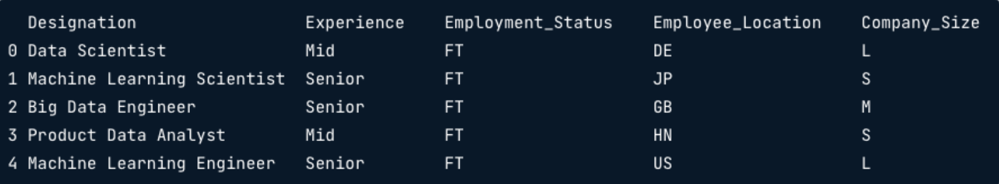
- Títulos de los trabajos
print(salaries['Designation'].value_counts())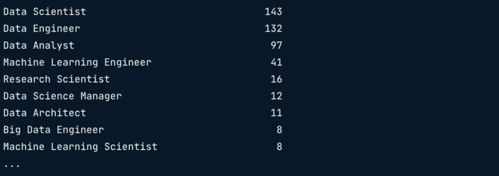
print(salaries['Designation'].nunique())

Extrayendo valores desde las categorías
El formato actual de los datos limita la capacidad de generar información.
pandas.Series.str.contains()- Busca en una columna una cadena especifica o múltiples cadenas.
salaries['Designation'].str.contains('Scientist')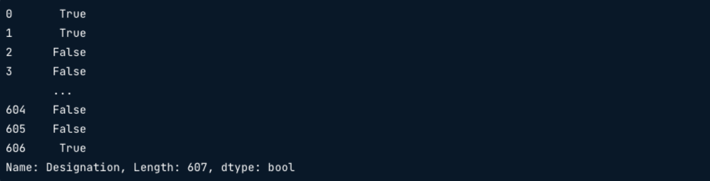
Filtrar filas que contienen una o más frases
- Palabras de interes: Machine Learning o AI
salaries['Designation'].str.contains('Machine Learning|AI')
Buscar múltiples frases en una cadena de caracteres
- Palabras de interes: Cualquiera que inicie con Data
salaries['Designation'].str.contains('ˆData')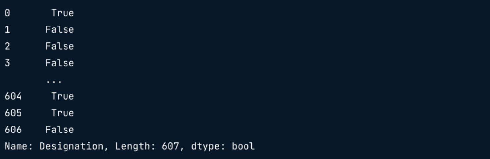
Ahora que se tiene una idea de cómo funciona este método, definamos una lista de títulos de trabajo que queremos encontrar:
job_categories = ['Data Science', 'Data Analytics',
'Data Engineering', 'Machine Learning',
'Managerial', 'Consultant']Luego necesitamos crear variables que contengan nuestros filtros
data_science = 'Data Scientist|NLP'
data_analyst = 'Analyst|Analytics'
data_engineer = 'Data Engineer|ETL|Architect|Infrastructure'
ml_engineer = 'Machine Learning|ML|Bid Data|AI'
manager = 'Manager|Head|Director|Lead|Principal|Staff'
consultant = 'Consultant|Freelance'El siguiente paso es crear una lista con nuestro rango de condiciones para el método str.contains
conditions = [
(salaries['Designation'].str.contains(data_science)),
(salaries['Designation'].str.contains(data_analyst)),
(salaries['Designation'].str.contains(data_engineer)),
(salaries['Designation'].str.contains(ml_engineer)),
(salaries['Designation'].str.contains(manager)),
(salaries['Designation'].str.contains(consultant))
]Finalmente, podemos crear nuestra nueva columna Job_Category usando la función de selección de Numpy
salaries['Job_Category'] = np.select(conditions,
job_categories,
default='Other')Al obtener una vista previa de la Designación y nuestra nueva columna Job_Category, podemos verificar los primeros cinco valores.
print(salaries[['Designation', 'Job_Category']].head())
- Visualización de la frecuencia de la categoría job
sns.countplot(data=salaries, x='Job_Category')
plt.show()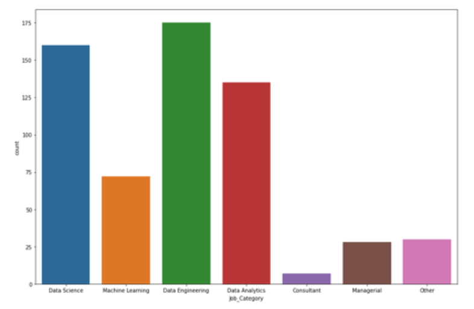
Encontrar el número de valores únicos
Te gustaría practicar algunas de las habilidades de manipulación y análisis de datos categóricos que acabas de ver. Para ayudarte a identificar qué datos podrían reformatearse para extraer valor, vas a averiguar qué columnas no numéricas del conjunto de datos planes tienen un gran número de valores únicos.
Instrucciones
Filtra
planespara las columnas que sean del tipo datos"object".Recorre las columnas del conjunto de datos.
Añade el iterador de columna a la sentencia print y, a continucación, llama a la función para que devuelva el número de valores únicos de la columna.
# Filter the DataFrame for objects columns
non_numeric = planes.select_dtypes('object')
# Loop through columns
for column in non_numeric.columns:
# Print the number of unique values
print(f"Number of unique values in {column} column: {non_numeric[column].nunique()}")Number of unique values in Airline column: 8
Number of unique values in Date_of_Journey column: 44
Number of unique values in Source column: 5
Number of unique values in Destination column: 6
Number of unique values in Route column: 122
Number of unique values in Dep_Time column: 218
Number of unique values in Arrival_Time column: 1220
Number of unique values in Duration column: 362
Number of unique values in Total_Stops column: 5Curiosamente, "Duration" es actualmente una columna de tipo objeto cuando debería ser una columna numérica, ¡y tiene 362 valores únicos! Vamos a averiguar más sobre esta columna.
Categoría de duración de vuelos
Como has visto, hay 362 valores únicos en la columna "Duration" de planes. Llamando a planes['Duration'].head(), vemos los siguientes valores.
0 19h
1 5h 25m
2 4h 45m
3 2h 25m
4 15h 30m
Name: Duration, dtype: objectParece que no será sencillo convertirlo a números. Sin embargo, ¡podrías clasificar los vuelos por duración y examinar la frecuencia de las distintas longitudes de vuelo!
Crearás una columna "Duration_Category" en el DataFrame planes. Antes tendrás que crear una lista de valores que deseas insertar en el DataFrame, seguida de los valores existentes a partir de los cuales deben crearse.
Instrucciones
- Crea una lista de categorías que contengan
"Short-haul","Medium"y"Long-haul".
# Create a list of categories
flight_categories = ['Short-haul', 'Medium', 'Long-haul']Crea
short_flights, una cadena para capturar valores de"0h","1h","2h","3h","4h"teniendo cuidado de evitar valores como"10h".Crea
medium_flightspara capturar cualquier valor entre cinco y nueve horas. ~Crea
long_flightspara capturar cualquier valor comprendido entre 10 y 16 horas, ambos inclusive.
# Create a list of categories
flight_categories = ['Short-haul', 'Medium', 'Long-haul']
# Create short-haul values
short_flights = '^0h|^1h|^2h|^3h|^4h'
# Create medium-haul values
medium_flights = '^5h|^6h|^7h|^8h|^9h'
# Create long-haul values
long_flights = '^10h|^11h|^12h|^13h|^14h|^15h|^16h'Ahora has creado tus categorías y valores, es hora de agregar condicionalmente las categorías en el DataFrame
Añadir categorías de duración
Ahora que has configurado las categorías y los valores que quieres capturar, ¡es hora de construir una nueva columna para analizar la frecuencia de los vuelos según su duración!
Las variablesflight_categories, short_flights, medium_flights y long_flights que creaste anteriormente están a tu disposición.
import numpy as npInstrucciones
Crea
conditions, una lista que contenga subconjuntos deplanes['Duration']basados enshort_flights,medium_flightsylong_flights.Crea la columna
"Duration_Category"llamando a una función que acepte tu listaconditionsyflight_categories, estableciendo los valores no encontrados en"Extreme duration".Crea un gráfico fque muestre el recuento de cada categoría.
# Create conditions for values in flight_categories to be created
conditions = [
(planes['Duration'].str.contains(short_flights)),
(planes['Duration'].str.contains(medium_flights)),
(planes['Duration'].str.contains(long_flights))
]
# Apply the conditions list to the flight_categories
planes['Duration_Category'] = np.select(conditions, flight_categories,
default='Extreme duration')
# Plot the counts of each categoryß
sns.countplot(data=planes, x='Duration_Category',
hue='Duration_Category', legend=False)
plt.show()
¡Está claro que la mayoría de los vuelos son de corta distancia.
Trabajar con datos numéricos
- El dataset origina de los salarios
print(salaries.info())
- Salario en Rupias
print(salaries['Salary_In_Rupees'].head())
Convirtiendo cadena de caracteres en números
Remover las comas de los valores
Salary_In_RupeesConvertir la columna a tipo de dato
floatCrear una nueva columna convirtiendo la moneda a dólares
pd.Series.str.replace('Caracter a remover', 'Caracter a reemplazar')salaries['Salary_In_Rupees'] = salaries['Salary_In_Rupees'].str.replace(',', '')
print(salaries['Salary_In_Rupees'].head())
salaries['Salary_In_Rupees'] = salaries['Salary_In_Rupees'].astype(float) 1 Indian Rupee = 0.012 US Dollars
salaries['Salary_USD'] = salaries['Salary_In_Rupees'] * 0.012- Previsualizando la nueva columna
print(salaries[['Salary_In_Rupees', 'Salary_USD']].head())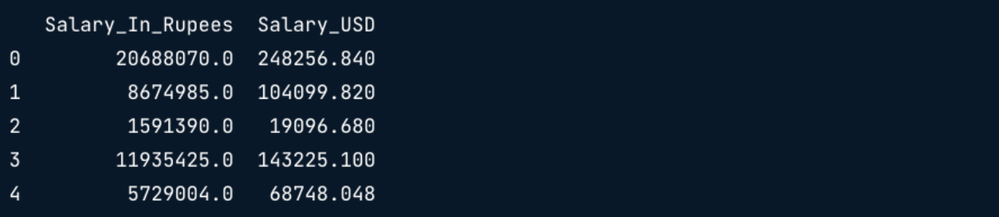
- Añadiendo un resumen esrtadístico al DataFrame
salaries.groupby('Company_Size')['Salary_USD'].mean()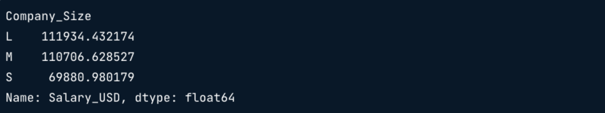
Calculo de la desviación estándar de los salarios por experiencia:
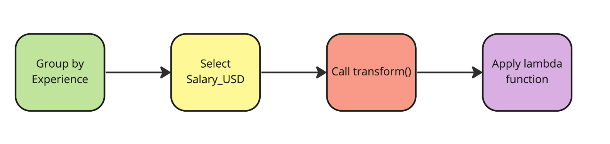
salaries['std_dev'] = salaries.groupby('Experience') \
['Salary_USD'].transform(lambda x: x.std())print(salaries[['Experience', 'std_dev']].value_counts())Repitamos el proceso para otros datos estadísticos:
salaries['median_by_comp_size'] = salaries.groupby('Company_Size') \
['Salary_USD'].transform(lambda x: x.median())print(salaries[['Company_Size', 'median_by_comp_size']].head())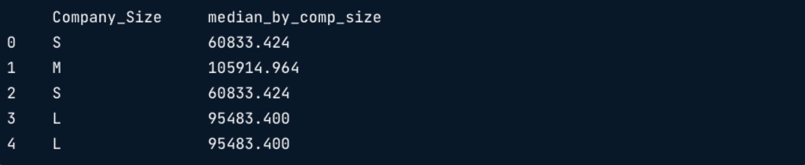
Duración del vuelo
Te gustaría analizar la duración de los vuelos, pero por desgracia, la columna "Duration" de DataFrame planes contiene actualmente valores de cadena.
Tendrás que limpiar la columna y convertirla al tipo de datos correcto para el análisis.
import re
def duration_to_decimal_str(duration_str: str) -> str:
'''
Convierte una duración de vuelo de formato '2h 30m' a una cadena en formato decimal en horas, como '2.5h'.
Parámetros:
-----------
duration_str : str
Cadena de texto que representa la duración de un vuelo, como '2h 30m', '45m', '19h', etc.
Retorna:
--------
str
Cadena con duración expresada en horas decimales, con un solo decimal y el sufijo 'h'. Ej: '2.5h'
'''
horas = re.search(r'(\d+)\s*h', duration_str)
minutos = re.search(r'(\d+)\s*m', duration_str)
h = int(horas.group(1)) if horas else 0
m = int(minutos.group(1)) if minutos else 0
decimal_hours = round(h + m / 60, 1)
return f'{decimal_hours}h'
planes['Duration'] = planes['Duration'].apply(duration_to_decimal_str)Instrucciones
- Imprime los cinco primeros valores de la columna
"Duration".
# Preview the column
print(planes['Duration'].head())0 19.0h
1 5.4h
2 4.8h
3 2.4h
4 15.5h
Name: Duration, dtype: object- Retira
"h"de la columna
# Remove the string character
planes['Duration'] = planes['Duration'].str.replace('h', '')
print(planes['Duration'].head())0 19.0
1 5.4
2 4.8
3 2.4
4 15.5
Name: Duration, dtype: object- Convierte la columna al tipo de datos
float.
# Convert to float data type
planes['Duration'] = planes['Duration'].astype(float)
print(planes['Duration'].head())0 19.0
1 5.4
2 4.8
3 2.4
4 15.5
Name: Duration, dtype: float64- Traza un histograma de los valores de
"Duration"
# Plot a histogram
sns.histplot(data=planes, x='Duration')
plt.show()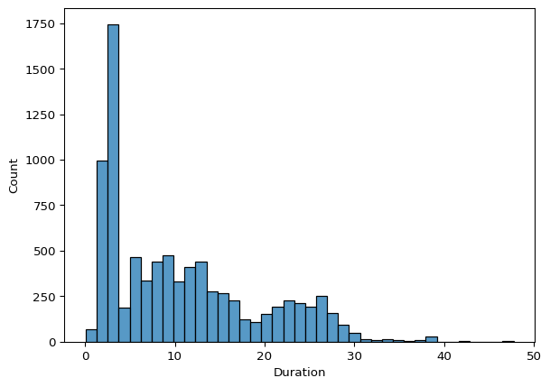
Añadir estadísticas descriptivas
Ahora "Duration" y "Price"contienen valores numéricos en el DataFrame planes, y te gustaría calcular para ellos estadísticas de resumen condicionadas a los valores de otras columnas.
Instrucciones
- Añade una columna a
planesque contenga la desviación estándar de"Price"basada en"Airline".
# Price standard deviation by Airline
planes['airline_price_st_dev'] = planes.groupby('Airline')['Price'].transform(lambda x: x.std())
print(planes[['Airline', 'airline_price_st_dev']].value_counts())Airline airline_price_st_dev
Jet Airways 4159.846432 3082
IndiGo 2245.529140 1632
Air India 3692.609285 1399
Multiple carriers 3558.323763 959
SpiceJet 1798.900648 653
Vistara 2888.915498 376
Air Asia 1979.826234 260
GoAir 2764.926625 147
Name: count, dtype: int64- Calcula la mediana de
"Duration"en"Airline", almacenándola como una columna llamada"airline_median_duration".
# Median Duration by Airline
planes['airline_median_duration'] = planes.groupby('Airline')['Duration'].transform(lambda x: x.median())
print(planes[['Airline', 'airline_median_duration']].value_counts())Airline airline_median_duration
Jet Airways 13.3 3082
IndiGo 2.9 1632
Air India 15.5 1399
Multiple carriers 10.2 959
SpiceJet 2.5 653
Vistara 3.2 376
Air Asia 2.8 260
GoAir 2.9 147
Name: count, dtype: int64- Encuenta la media
"Price"por"Destination", guardándola como una columna llamada"price_destination_mean".
# Mean Price by Destination
planes['price_destination_mean'] = planes.groupby('Destination')['Price'].transform(lambda x: x.mean())
print(planes[['Destination', 'price_destination_mean']].value_counts())Destination price_destination_mean
Cochin 10473.585927 3631
Banglore 9093.622872 2291
Delhi 5248.541082 998
New Delhi 11579.306944 720
Hyderabad 5190.274021 562
Kolkata 4907.156863 306
Name: count, dtype: int64Parece que Jet Airways tiene la mayor desviación estándar en precio, Air India tiene la mayor duración median, y Nueva Delhi, en promedio, es el destiono más caro. Ahora veamos cómo manejar los datos atípicos.
Gestión de valores atípicos
- Qué es un outlier?
- Es una observación que está muy alejada de otros puntos de datos.
- Usando estadística descriptiva
print(salaries['Salary_USD'].describe())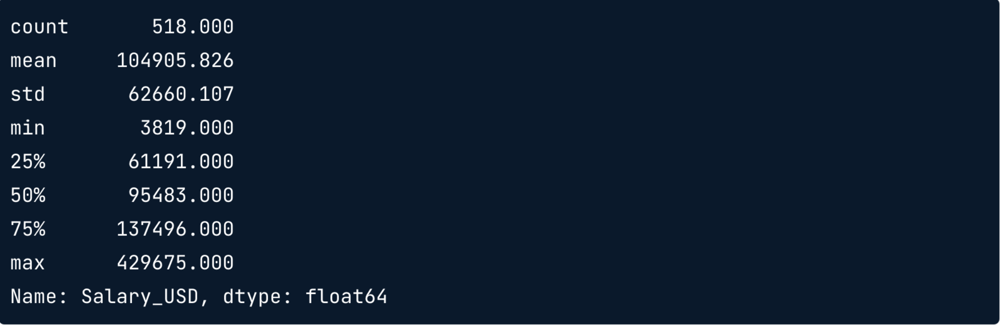
Usando el rango intercuartil
Rango intercuartil (IQR)
IQR = 75th - 25th percentil
Upper outliers > 75th percentile + (1.5 * IQR)
Lower Outliers < 25th percentile - (1.5 * IQR)
sns.boxplot(data=salaries, y='Salaary_USD')
plt.show()
- Identificando Umbrales
# 75th percentil
seventy_fifth = salaries['Salary_USD'].quantile(0.75)
# 25th percentil
twenty_fifth = salaries['Salary_USD'].quantile(0.25)
# Interquartil range
salaries_iqr = seventy_fifth - twenty_fifth
print(salaries_iqr)
# Upper threshold
upper = seventy_fifth + (1.5 * salaries_iqr)
# Lower threshold
lower = twenty_fifth - (1.5 * salaries_iqr)
print(upper, lower)- Subdividiendo nuestros datos
salaries[(salaries['Salary_USD'] < lower) | (salaries['Salary_USD'] > upper)] \
[['Experience', 'Employee_Location', 'Salary_USD']]
¿ Por qué buscar los Outliers?
Los Outliers son valores extremos
- Pueden no representar con precisión los datos
Pueden sesgar la media y la desviación estándar
Pruebas de estadística y modelos de machine learning requieren datos que tengan una distribución normal y no esten sesgados.
Qué hacer con los Outliers?
Preguntas que nos debemos hacer:
Por qué existen los outliers?
Los valores son precisos?
Eliminación de Outliers
no_outliers = salaries[(salaries['Salar_USD'] > lower) & (salaries['Salary_USD'] < upper)]print(no_outliers['Salary_USD'].describe())
- Distribución de Salarios
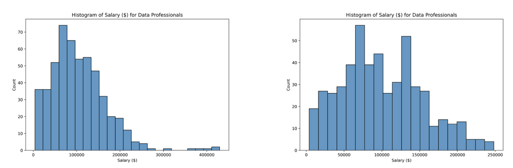
Qué hacer con los valores atípicos?
Identificar los valores atípicos es un paso integral en la realización de análisis exploratorios de datos.
En este ejercicio, se te presentarán escenarios en los que hay valores atípicos, y tendrás que decidir qué acción debes tomar.
Instrucciones
Coloca cada escenario en el cubo adecuado en función del enfoque que deba adaptarse para tratar los valores atípicos.
Elimina los valores atípicos Dejar los valores atípicos en el conjunto de datos Un sensor de temperatura tiene un registro de 100 grados Celsius, pero el sensor solo funciona correctamente a temperaturas de hasta 80 grados. se registran las alturas de distintos animales y uno de ellos es más de 1.5 veces la IQR más el percentil 75. La velocidad de un coche se registra como 5000 km/h. Los países tienen una superficie total media de 667.143 km2, pero un país tiene 1.637.687 km2. Un participante en un estudio tiene una edad de menos 35 años. Un jugador de baloncesto hace una media de 35 puntos por partido cuando la media en toda la liga es de solo 10 puntos por partido.
Puede ser difícil decidir qué hacer con los valores atípicos, pero debes saber cómo gestionarlos, ¡ya que a menudo se dan en el mundo real!
Identificar valores atípicos
Has demostrado que reconoces qué hacer cuando se te presentan valores atípicos, pero ¿Puedes identificarlos utilizando visualizaciones?
Intenta averiguar si hay valores atípicos en las columnas "Price" o "Duration" del dataframe planes.
Intrucciones
- Traza la distribución de la columna
"Price"deplanes.
# Plot a histogram of flight prices
sns.histplot(data=planes, x='Price')
plt.show()
- Muestra las estadísticas descriptivas de la duración del vuelo.
# Display descriptive statistics for flight duration
print(planes['Duration'].describe())count 8508.000000
mean 10.726704
std 8.472415
min 0.100000
25% 2.800000
50% 8.700000
75% 15.500000
max 47.700000
Name: Duration, dtype: float64- Pregunta
¿Qué columna contiene potencialmente valores atípicos?
Respuestas Posibles
Los histogramas, diagramas de caja y estadísticas descriptivas también son métodos útiles para identificar valores extremos. ¡Ahora vamos a tratarlos!
Eliminar valores atípicos
Aunque eliminar los valores atípicos no siempre es el camino a seguir, para tu análisis has decidido que solo incluirás los vuelos en los que el "Price" no sea un valor atípico.
Por lo tanto tienes que encontrar el umbral superior y utilizarlo para eliminar los valores que lo superen del Dataframe planes.
Instrucciones
- Halla los percentiles 75 y 25, guardando como
price_seventy_fifthyprice_twenty_fifthrespectivamente.
# Find the 75th and 25th percentiles
price_seventy_fifth = planes['Price'].quantile(0.75)
price_twenty_fifth = planes['Price'].quantile(0.25)- Calcula el IQR, almacenándolo como
prices_iqr.
# Calculate iqr
prices_iqr = price_seventy_fifth - price_twenty_fifth
print(prices_iqr)7014.0- Calcula los umbrales superior e inferior de los valores atípicos.
# Calculate the thresholds
upper = price_seventy_fifth + (1.5 * prices_iqr)
lower = price_twenty_fifth - (1.5 * prices_iqr)- Elimina los valores atípicos de
planes.
# Subset the data
planes = planes[(planes['Price'] > lower) & (planes['Price'] < upper)]
print(planes['Price'].describe())count 8438.000000
mean 8877.466046
std 4001.838236
min 1759.000000
25% 5224.000000
50% 8372.000000
75% 12121.000000
max 22270.000000
Name: Price, dtype: float64¡Habilidades ridículas para eliminar valores atípicos! Lograste crear umbrales basados en el IQR y los usaste para filtrar el conjunto de datos planes para eliminar precios extremos. Originalmente, el conjunto de datos tenía un precio máximo de casi 55000, pero la salida de planes['Price'].describe() muestra que el máximo se ha reducido a alrededor de 23000, ¡reflejando una distribución menos sesgada para el análisis!